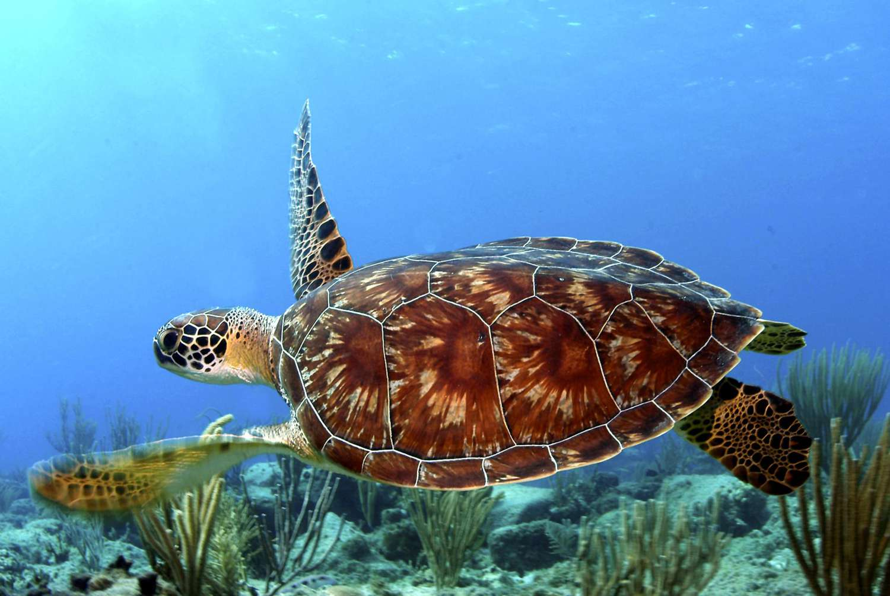
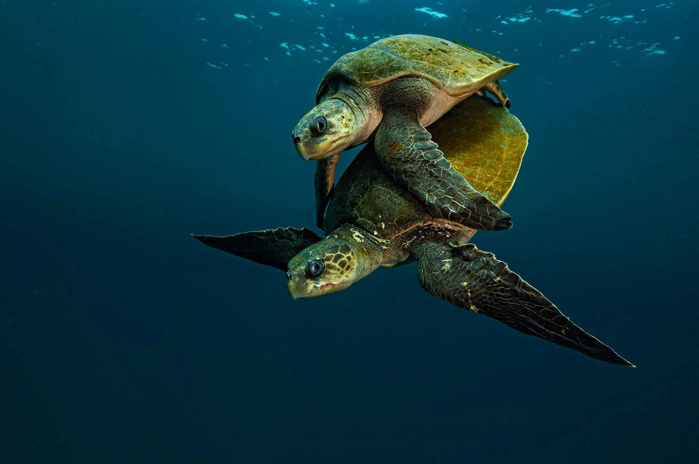
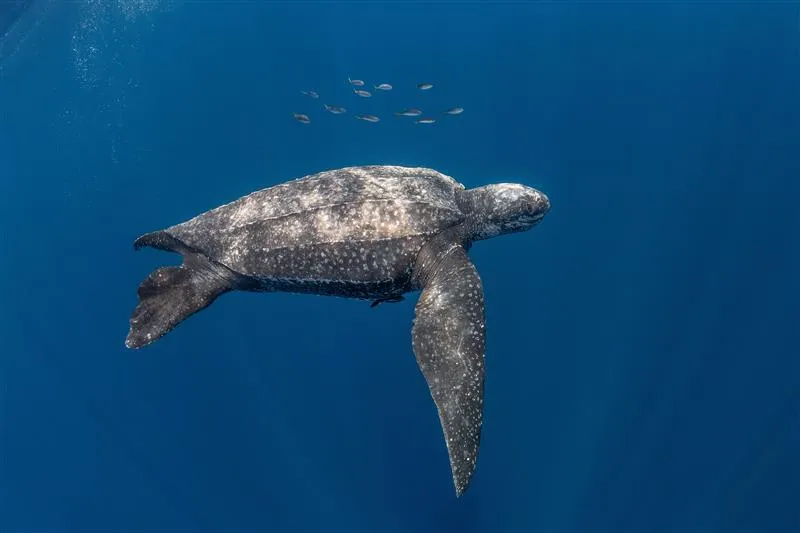

Where Do They Nest?
Malaysia's coastlines are home to four sea turtle species: the Green, Hawksbill, Olive Ridley, and the locally extinct Leatherback. Each faces a unique combination of threats, and each nests on different stretches of coast.

Green Turtle
Endangered. 10,000 to 15,000 nests/year.

Hawksbill Turtle
Critically Endangered. 400 to 500 nests/year.

Olive Ridley Turtle
Vulnerable. Under 100 nests/year.

Leatherback Turtle
Locally extinct. 0 to 2 nests/year.
Sabah's Turtle Islands Park records the highest nesting density in the country, while Terengganu's beaches carry the weight of historical significance. The map below plots every documented nesting beach alongside the mean sea surface temperature recorded at each site. Warmer colours signal locations where rising heat already threatens incubation.
The Threats They Face
Commercial egg poaching remains the single largest direct threat to Malaysian sea turtles. Between 2015 and 2019, over 75,000 turtle eggs were confiscated in Malaysia alone, and that figure captures only what enforcement agencies actually intercepted. The true scale of poaching is far larger.
As conservation efforts grow and more turtles nest on protected beaches, a troubling paradox emerges: the estimated volume of eggs lost to poaching rises in tandem. More nesting activity draws more attention from illegal collectors.
Different species are hunted for different products. Green turtles are overwhelmingly targeted for their eggs, consumed domestically and exported to Vietnam. Hawksbill turtles, by contrast, are prized for their shells, the raw material for the luxury bekko trade in Japan and East Asia.
What the Data Reveals
The Leatherback turtle's story at Rantau Abang is the starkest warning. From over 10,000 nests per year in the 1950s, the population collapsed to functional extinction. Protection came too late.
Rising sea surface temperatures do more than warm the water. They heat the sand where eggs incubate, pushing nest failure rates sharply upward. Years with strong positive temperature anomalies consistently correlate with spikes in nest mortality across Malaysian beaches.
Sea turtles nest seasonally, with Green turtles peaking between June and September during the southwest monsoon. The heatmap below reveals how each species' nesting window aligns with the warmest months, precisely when thermal stress on developing embryos is highest.
Is Conservation Working?
The most powerful evidence comes from state-level legislation. In Sabah and Sarawak, where commercial egg trade is strictly banned, nearly all eggs reach protected hatcheries. In states with fragmented enforcement, the majority are still sold in open markets.
The contrast sharpens when we look at where eggs ultimately end up. States with total bans show green-dominant bars, meaning eggs going to hatcheries. States with legal ambiguity show red, meaning eggs entering commercial channels.
In Sabah's Turtle Islands Park, the data traces a clear upward trajectory: more female landings are translating into more eggs secured in hatcheries year after year. The connected path below shows this steady improvement from 2008 to 2023.
Trafficking does not discriminate by age. Both juvenile and adult turtles are seized in alarming numbers, compounding the generational damage to already fragile populations.